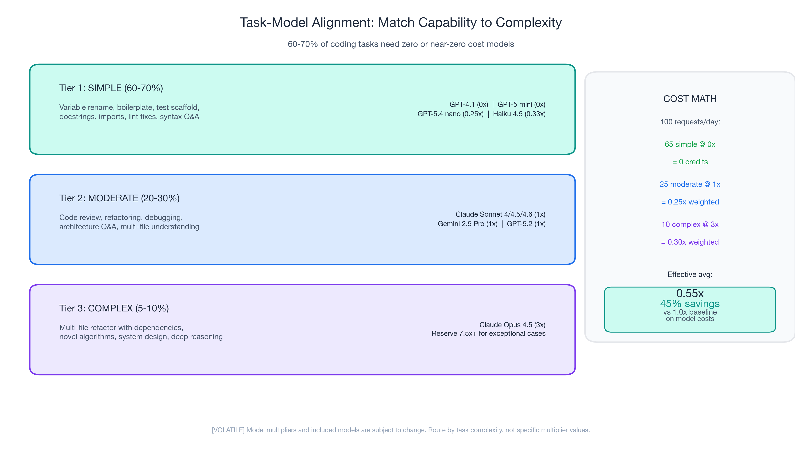
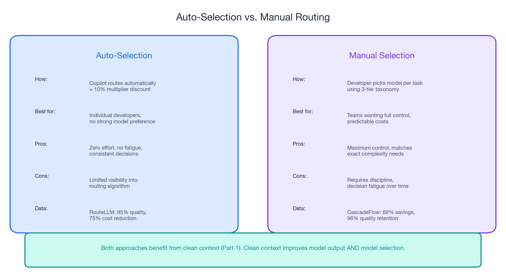
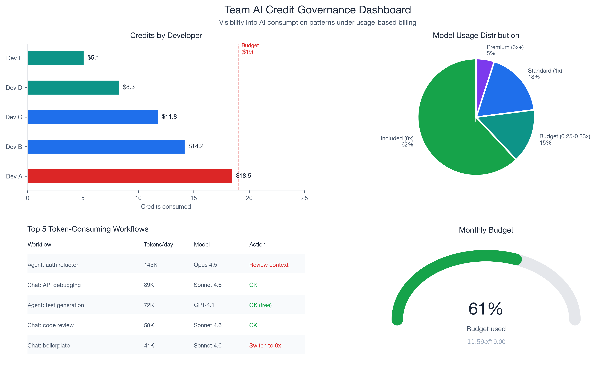
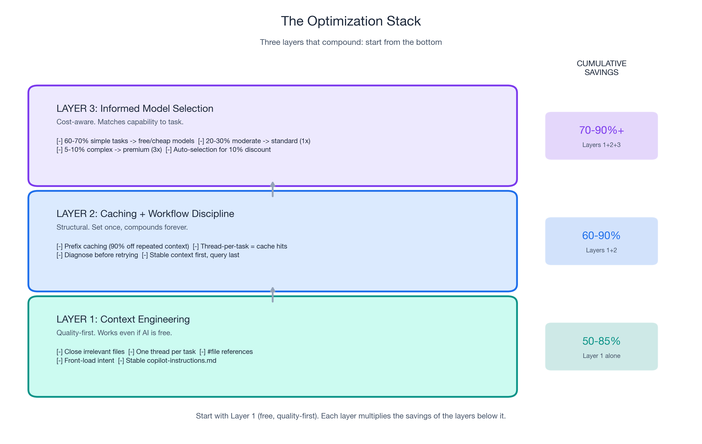

Part 3 of 3 in the "Engineering Better AI Code Assistant Interactions" series. Previously: Part 1 covered context engineering (50-85% token reduction). Part 2 covered prompt caching (90% discount) and workflow discipline.
Not All Tokens Are Priced Equal: Understanding GitHub Copilot Model Multipliers
Under GitHub Copilot's usage-based billing (effective June 1, 2026), every model carries a multiplier. GPT-5.4 nano costs 0.25x. Claude Opus 4.6 fast mode costs 30x. That is a 120x cost difference for the same interaction pattern. (Model multipliers and included models are subject to change — GitHub's documentation says so explicitly.)
But this is not a "use cheap models" story. Apple ML Research found that reasoning models burn thousands of extra tokens on simple tasks — with zero quality improvement. Standard models actually provided better accuracy on low-complexity items.
Matching Model Capability to Task Complexity
Tier 1: Simple tasks (60-70% of daily interactions)
Variable renaming. Boilerplate generation. Test scaffolding. Docstring writing. Import fixing. These tasks require pattern matching, not multi-step reasoning. Free/cheap models perform equally well.
Tier 2: Moderate tasks (20-30%)
Code review, refactoring, debugging, architecture questions, multi-file understanding. Standard models (1x) offer the best quality-per-credit ratio.
Tier 3: Complex tasks (5-10%)
Multi-file refactoring with dependencies, novel algorithms, system design. The only tier where premium models demonstrably outperform standard models. Use them deliberately.
The cost math
| Tier | % of requests | Multiplier | Weighted cost |
|---|---|---|---|
| Simple (Tier 1) | 65% | 0x (included) | 0 |
| Moderate (Tier 2) | 25% | 1x | 0.25x |
| Complex (Tier 3) | 10% | 3x | 0.30x |
| Effective average | 0.55x (45% savings) |
RouteLLM demonstrated this at scale: 95% of GPT-4 quality using only 14% GPT-4 calls. A production team dropped from $3,000/day to $970/day (68% reduction, $740K/year annualized) through routing alone.

Let the Router Do the Work
Copilot's auto model selection offers a 10% multiplier discount and algorithmically routes tasks to appropriate models. RouteLLM achieved 95% quality at 75% cost reduction — better than most humans would achieve switching manually. CascadeFlow delivered 69% savings with 96% quality retention. Both prove: let the system match complexity to capability.
Caveat: limited public data on Copilot's specific auto-selection algorithm. For maximum control, manual selection using the task taxonomy is more predictable.
Clean context (Part 1) improves routing decisions. When the router gets better signal about what you are asking, it makes better model choices. Clean context improves model output and model selection.

Budget Visibility for Engineering Managers: GitHub Copilot Usage-Based Billing Governance
The new billing model introduces governance tools that did not exist under flat-rate pricing: pooled usage across organizations, budget controls at enterprise/cost center/user levels, and visibility into which developers, projects, and models consume the most credits. For the first time, a developer making 300 requests/day and one making 30 look different on the bill.
Recommended team standards
- Establish default model guidelines by task type. Document in your team wiki or
.github/copilot-instructions.md. - Set budget alerts before June 1. Configure at 50%, 75%, and 90% of credit allocation.
- Review top-consuming projects monthly. Identify which workflows generate the most tokens.
- Invest in context engineering training, not model restrictions. The managers who teach context engineering get the same cost reduction with happier developers.


The Complete Playbook: Three Layers, One Page
| Layer | What | Savings | "Would I do this if AI were free?" |
|---|---|---|---|
| 1: Context Engineering (Part 1) | Five practices: close files, thread hygiene, #file references, front-load intent, stable instructions | 50-85% token reduction | Yes |
| 2: Caching + Workflow (Part 2) | Prefix caching, retry elimination, structured prompts | Up to 90% on repeated context | Mostly |
| 3: Model Selection (Part 3) | Task taxonomy, auto-selection, deliberate premium use | 45-75% on model costs | Billing-specific |
Combined potential: 70-90% effective cost reduction with better output quality than an unoptimized workflow using expensive models. Start with Layer 1 (free, quality-first). Each layer multiplies the savings of the layers below it.

Start With Context, Not Cost
The developers who will thrive under usage-based billing are not the ones who switched to the cheapest model. They are the ones who learned to give AI better input.
- Apply the five context engineering practices from Part 1 this week.
- Stabilize your copilot-instructions file to enable caching (Part 2).
- Review the task taxonomy and match your default model to your actual task mix.
The billing change is real. The advice is durable. Better input produces better output whether you pay per token, per request, or nothing at all.
← Part 1: Context Engineering | ← Part 2: Invisible Compound Savings